밋밋한 바이브코딩 앱, 무엇이 빠졌을까요
바이브코딩으로 만든 앱은 기능은 돌아가도 어딘가 비슷비슷하게 평범해 보여요. 발표자는 상위권 앱과 이런 앱을 가르는 요소 몇 가지 중 하나로 애니메이션을 꼽아요. 이 영상은 왜 애니메이션이 중요한지, 어떤 기법이 있는지, 그리고 Codex로 어떤 작업까지 할 수 있는지를 차례로 다뤄요.
발표자 John Kim은 메타의 시니어 스태프 엔지니어예요. Instagram Reels의 펄스 애니메이션, Threads의 고스트 포스트 애니메이션을 직접 만들었어요. 그때는 AI 없이 손으로 짜야 해서 무척 고생스러웠는데, 지금은 훨씬 쉬워졌다고 해요.
퍼즐 앱의 첫 화면
예제로 계속 쓰는 앱은 발표자가 거의 다 만든 퍼즐 앱이에요. 기능을 99% 만든 뒤 남는 "라스트 마일", 즉 다듬는 단계에서 애니메이션을 집중해서 넣었어요. 아래는 그 첫 화면이에요. 파란·주황·노란 캐릭터 셋이 커피잔과 크루아상 주위에 모여 있고, 위에는 'Good things come in pieces.'라는 문구가 있어요.
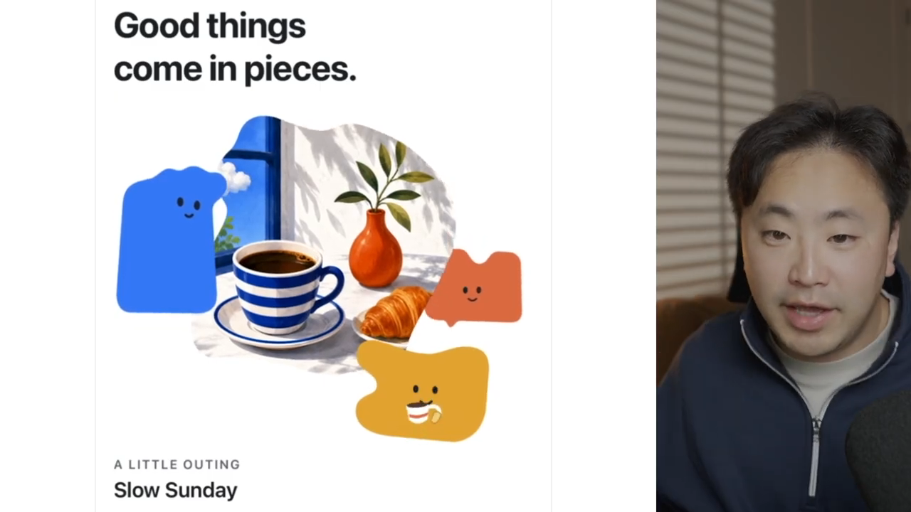
이 앱의 분위기는 '아늑함'이에요. 그래서 움직임을 일부러 서두르지 않게 만들었어요. 사용자가 처음 들어왔을 때 "와, 예쁘다" 하며 잠깐 멈춰서 바라보게 하는 게 목표였다고 해요. 이 화면에 쓴 기법들은 뒤에서 하나씩 풀어요.
애니메이션이 중요한 세 가지 이유
발표자는 애니메이션이 중요한 이유를 세 단어로 정리해요. 취향, 공예, 즐거움이에요.
| 관점 | 무슨 뜻인가요 | AI 앱에서 왜 빠지나요 |
|---|---|---|
| 취향 (taste) | 무엇이 좋은 느낌인지 고르는 감각 | 좋은 느낌을 검증할 기준이 없어서, AI 혼자서는 판단을 못 해요 |
| 공예 (craft) | 공들여 다듬은 흔적 | 대충 만든 앱은 기능으로 직행하고 가장 지루한 UI(User Interface)를 골라요 |
| 즐거움 (delight) | 사용자를 기분 좋게 만드는 작은 순간 | 기능 목록에 없는 부분이라 아무도 시키지 않아요 |
"애니메이션 만들어 줘"로는 부족해요
발표자가 화면에 띄운 건 코딩 에이전트 입력창에 "Hey go make me an animati…"까지 쳐 넣는 장면이에요. 이렇게만 시키면 AI는 무언가를 만들긴 해요. 하지만 결과는 대개 어설퍼요. 느낌이 좋은지는 사람만 알 수 있고, AI에게는 그걸 확인할 방법이 없기 때문이에요.
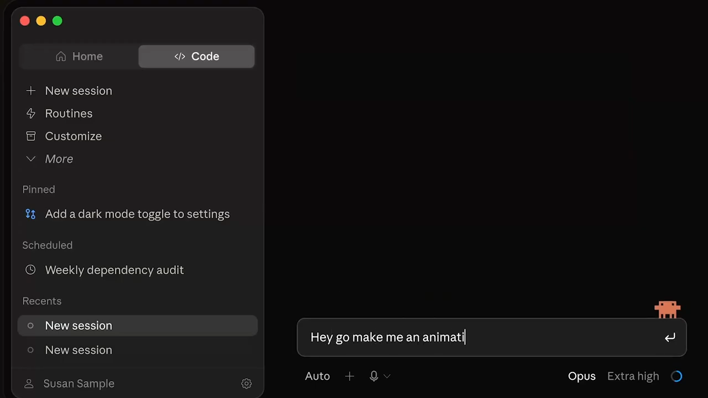
즐거움의 예: 접는 폰의 열림 애니메이션
즐거움은 발표자가 메타에서 배운 교훈이에요. 단순한 애니메이션 하나가 평범한 앱을 크게 퍼지는 앱으로 바꾸기도 한대요. 예로 든 건 막 나온 'iPhone Duo'예요. 아래 캡처는 손에 든 접는 폰이 펼쳐지는 영상이고, 아래쪽에 'iPhone Duo Animation'이라는 제목이 보여요.
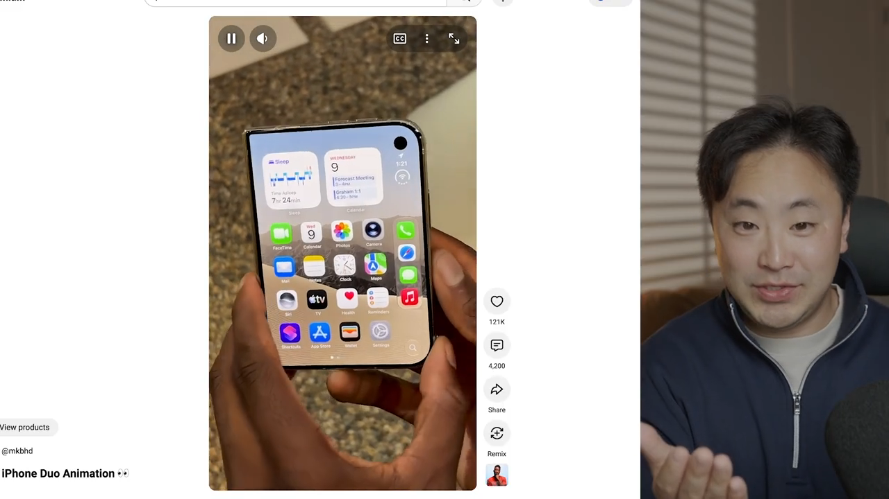
그래서 발표자의 조언은 단순해요. 앱이 주목을 못 받고 있다면 딱 맞는 애니메이션을 넣어 보라는 거예요. 성능도 중요하지만 그건 다른 영상에서 다룬다고 해요.
움직임을 만드는 기본 도구
여기서부터는 움직임을 만드는 기법을 하나씩 봐요. 발표자는 직접 만든 브라우저 데모('Animation playground')를 띄워 놓고 탭을 넘기며 설명해요. 탭은 Keyframes, Springs, Gestures, Physics, Layout, SVG(Scalable Vector Graphics) paths, Skeletal rig, Rive / Lottie, Flipbook, Video, Particles, Shader, Finish 순서예요. 이 섹션은 앞의 네 가지를 다뤄요.
키프레임: 몇 지점만 정하면 사이는 채워져요
Keyframes 탭의 제목은 'Set the poses. Choose the timing.'이에요. 아래 타임라인에 0.0초, 1.2초, 2.4초 세 점이 찍혀 있고, 점마다 네모의 위치·크기·투명도가 달라요. 왼쪽 위 작고 흐린 네모에서 오른쪽 위 크고 선명한 노란 네모로 바뀌어 가요.
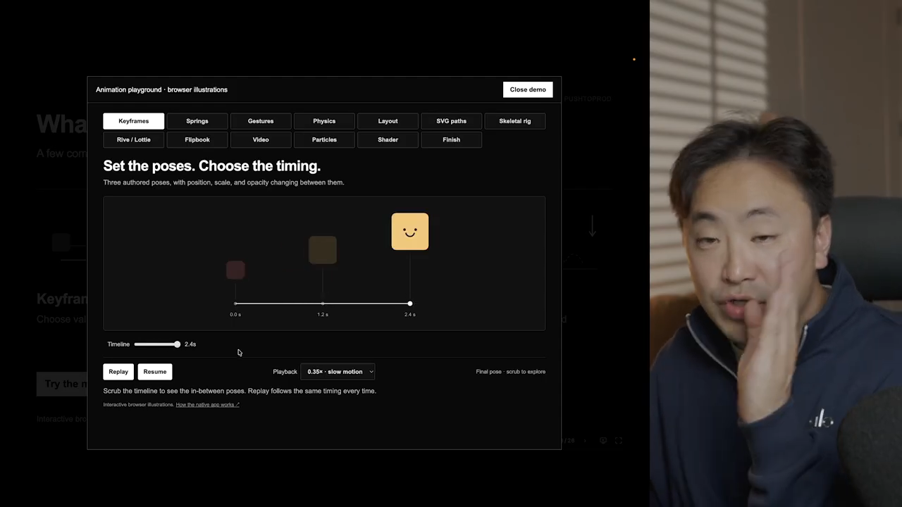
키프레임은 모양 A에서 모양 B로 바꾸는 정해진 연출에 맞아요. 위치뿐 아니라 색, 투명도(알파), 크기, 모양까지 바꿀 수 있어요.
스프링과 이징: 같은 목표, 다른 느낌
Springs 탭의 제목은 'Same target. Different feel.'이에요. 왼쪽 점과 오른쪽 보라색 네모가 지그재그 스프링으로 이어져 있고, 아래에 Gentle, Snappy, Bouncy 버튼이 있어요. 캡처는 Bouncy를 고른 상태예요.
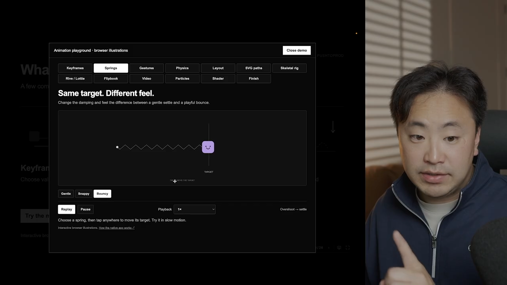
스프링을 더 알고 싶으면 이징 함수를 보라고 해요. 발표자가 띄운 'CSS easing playground'는 곡선마다 속도 변화를 보여 줘요. 왼쪽 큰 그래프는 ease-in-out 곡선이에요. 처음엔 완만하게 오르다가 가운데서 가파르고 끝에서 다시 완만해지죠. 천천히 시작해 빨라졌다가 천천히 멈춘다는 뜻이에요. 그래프 아래에는 이 곡선의 값 cubic-bezier(0.42, 0, 0.58, 1)이 적혀 있어요.
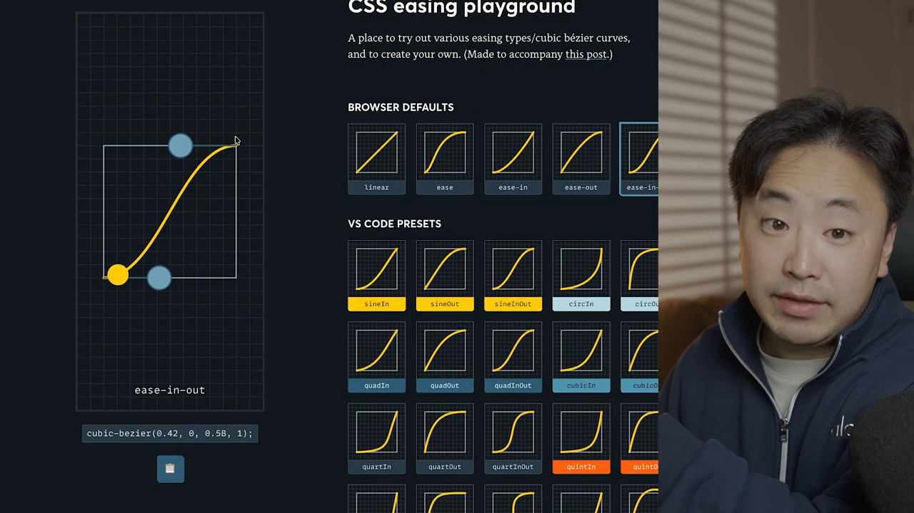
제스처: 손가락을 따라가요
Gestures 탭의 제목은 'Pick it up. Let it go.'예요. 가운데 작은 사진 카드를 마우스로 집어 끌 수 있어요. 오른쪽 아래에는 'Release → spring home'이라고 적혀 있어요. 놓으면 스프링으로 제자리로 돌아간다는 뜻이에요.
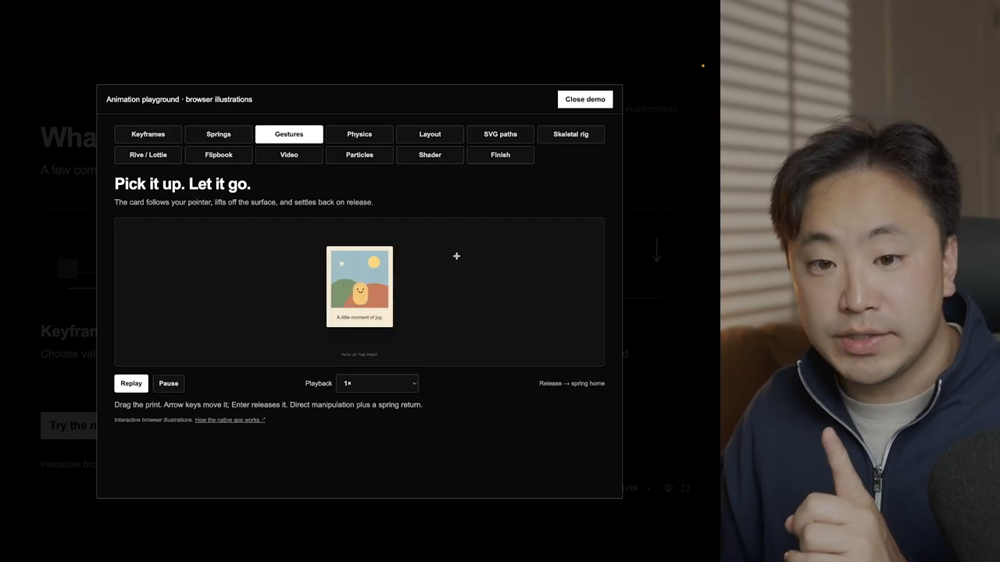
발표자는 스프링과 제스처를 합친 유명한 예로 첫 아이폰 발표를 들어요. 스티브 잡스가 목록을 손가락으로 튕기자 빨라졌다가 느려지고, 끝을 살짝 넘었다가 튕겨 돌아왔어요. 사람들이 그 장면에 놀랐던 거예요.
물리: 움직임을 시뮬레이션에 맡겨요
물리 기반 애니메이션은 현실처럼 중력과 충돌이 있는 환경을 만들고, 움직임을 미리 짜지 않고 시뮬레이션에 맡겨요. 발표자가 먼저 보여 준 건 게임 장면 두 개예요. 왼쪽은 주황색 방에서 장비로 통을 끌어당기는 장면이고, 오른쪽은 벽 앞에서 인형처럼 쓰러지는 캐릭터예요.
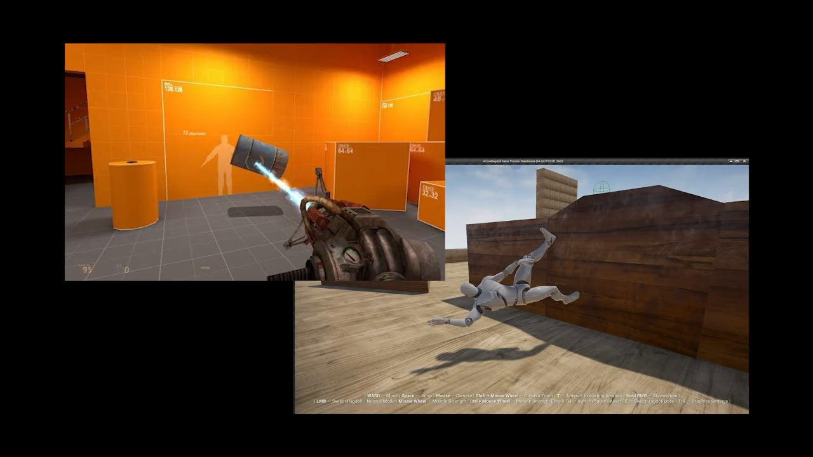
Physics 탭('A little gravity goes a long way.')에서는 웃는 공 여덟 개가 바닥에 떨어져 서로 부딪혀요. 아래 Bounce 슬라이더가 75%에 놓여 있어요. 이 값을 낮추면 거의 안 튀고, 높이면 더 통통 튀어요.
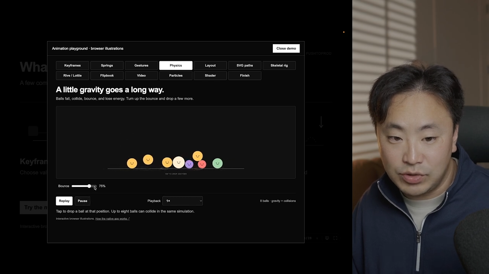
모양과 픽셀을 다루는 도구
다음 묶음은 물체의 위치보다 모양과 화면 구성을 바꾸는 기법이에요. 발표자는 먼저 요약 슬라이드를 띄워요. 'Paths, layouts, and rigs.'라는 제목 아래 세 칸이 있어요. 곡선 하나(SVG paths), 칸이 재배치되는 격자(Layout transitions), 관절이 있는 막대 인형(Skeletal rigs)이에요.
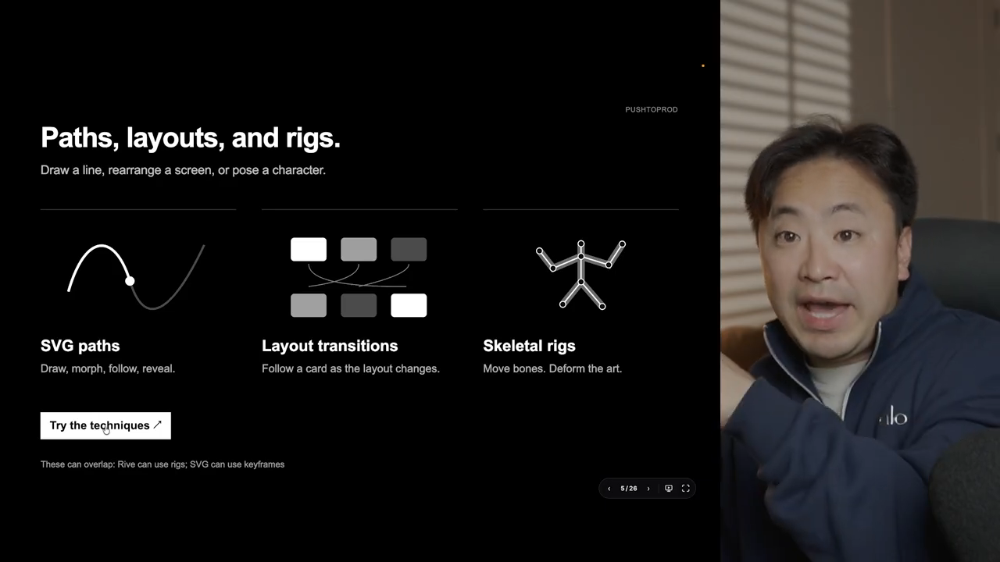
SVG 경로: 길을 그리고 따라가게 해요
SVG paths 탭('Animate the geometry itself.')에는 Draw on, Morph, Follow path, Mask reveal 네 버튼이 있어요. 캡처는 Draw on 상태로, 보라색 선이 물결 경로를 따라 그려지는 중이에요. 뒤에 흐린 선이 앞으로 그려질 전체 경로예요.
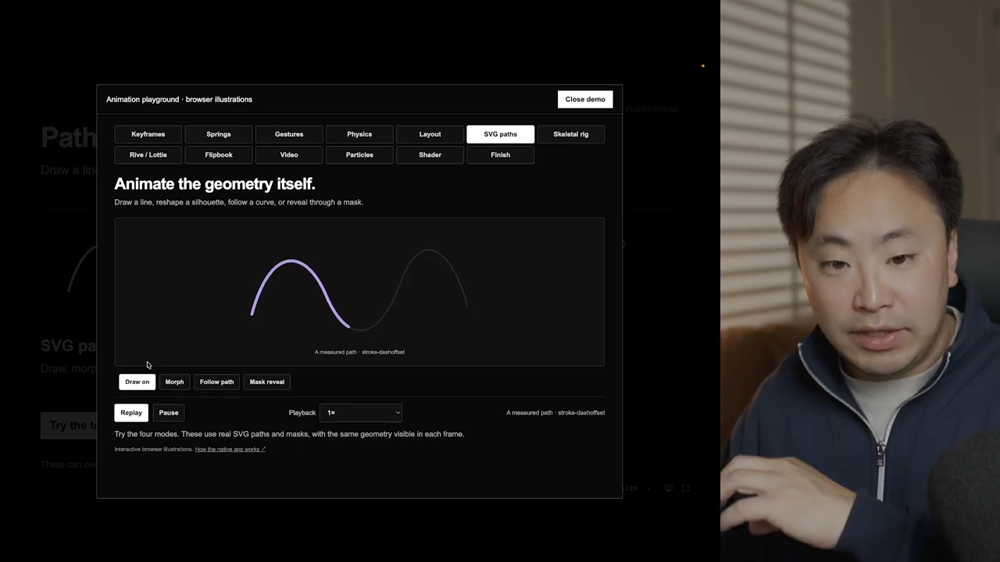
Morph를 누르면 바깥 윤곽선의 모양이 바뀌어요. 안쪽은 그냥 채우기라서 윤곽선만 바꾸면 전체 모양이 따라 변해요.
셰이더: 픽셀을 직접 계산해요
비슷한 모핑 효과를 셰이더로도 낼 수 있어요. Shader 탭('Calculate the edge, pixel by pixel.')은 흰 카드 하나와 Corner radius 슬라이더만 있어요. 설명줄에는 WebGL 프래그먼트 셰이더가 카드의 둥근 모서리를 계산한다고 적혀 있어요.
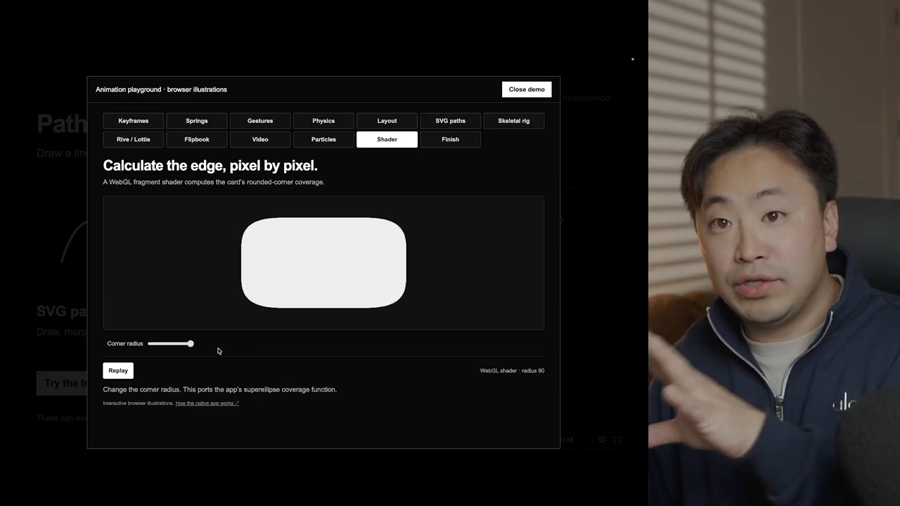
두 방식의 차이를 그림으로 옮기면 이래요. SVG는 윤곽선 위의 점을 옮기고, 셰이더는 그래픽 엔진으로 픽셀 하나하나의 색을 정해요. 그래서 SVG 경로가 없는 이미지를 모핑하려면 셰이더가 필요해요. 반대로 벡터 경로가 있으면 SVG로 충분해요.
레이아웃 전환: 같은 요소, 새 배치
Layout 탭('Same elements. A new arrangement.')에는 'A sunny day', 'A small bloom', 'A bright idea' 카드 세 장이 있어요. 아래 버튼은 FLIP(First, Last, Invert, Play), View Transitions, Reorder cards, Grid / list예요. 순서를 바꾸거나 목록을 격자로 바꿀 때, 카드가 순간이동하지 않고 새 자리로 미끄러져 가요.
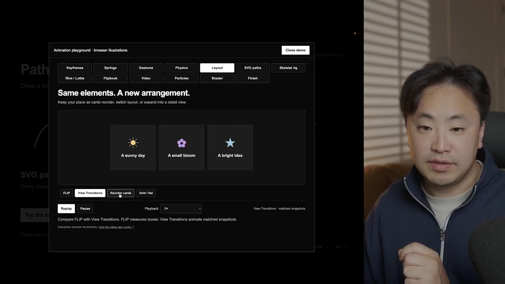
스켈레탈 리깅: 뼈를 움직이면 그림이 따라와요
Skeletal rig 탭('Move the bones. The artwork follows.')에는 보라색 옷을 입은 인형이 있어요. Show bones를 켜서 몸 안의 관절 점과 뼈대 선이 보이고, Wave–Dance 슬라이더로 손을 흔들거나 춤추게 해요.
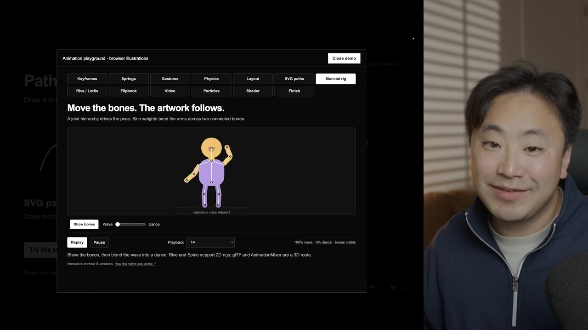
발표자는 리깅을 조금 특수한 기법이라고 해요. 게임에서는 캐릭터를 리깅해서 세계에 넣고 부위별로 조작해요. 물리와 합치면 래그돌처럼 사람이 진짜 쓰러지는 느낌도 나요. 이렇게 기법끼리 섞어서 새 효과를 만든다는 점을 여기서 한 번 더 짚어요.
파티클: 작은 조각 수백 개로 축하해요
발표자가 가장 좋아한다는 기법이에요. Particles 탭('Make the moment worth celebrating.')에서는 가운데 'Nailed it.' 문구 주위로 색종이가 터져요. 아래에는 Confetti, Star shower, Streamers 버튼과 Energy 슬라이더가 있어요.
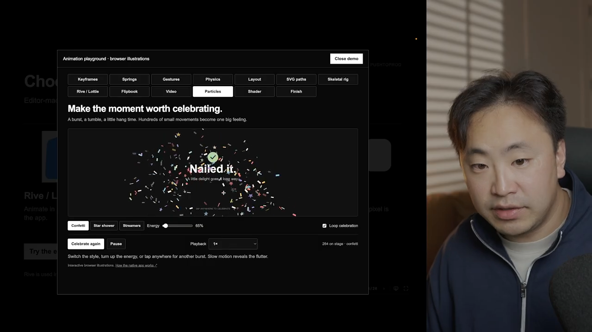
플립북과 영상: 미리 그린 프레임을 재생해요
Flipbook 탭('Four drawings. A lot of character.')은 오른쪽에 따로 그린 그림 네 장(찌그러짐, 늘어남, 들림, 착지)을 늘어놓고, 왼쪽에서 그걸 차례로 넘겨 보여 줘요. Drawings / sec 슬라이더가 3에 있어서 1초에 세 장씩 넘어가요.
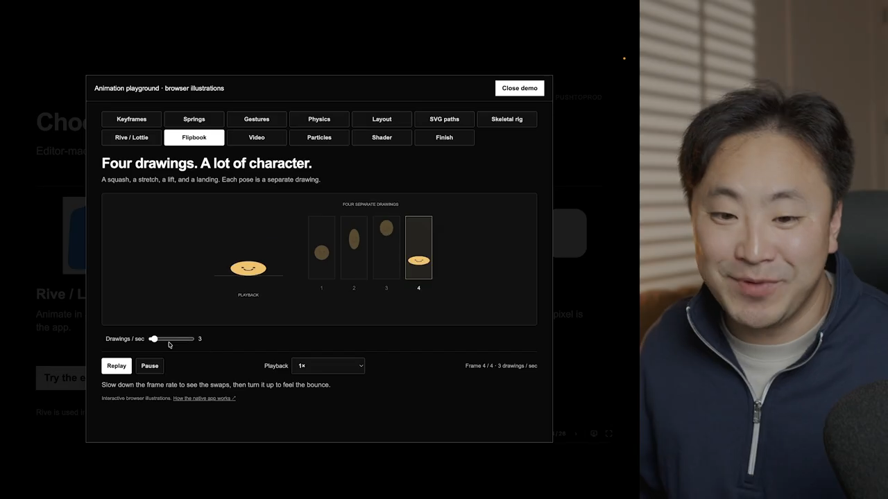
마지막은 아예 영상이나 GIF(Graphics Interchange Format)로 구워 버리는 방법이에요. Video 탭('Bake the performance. Play the frames.')에는 파란 캐릭터가 MP4(MPEG-4 Part 14)로 들어 있어요. 앱은 재생만 조절하고 캐릭터의 부위는 건드리지 못해요.
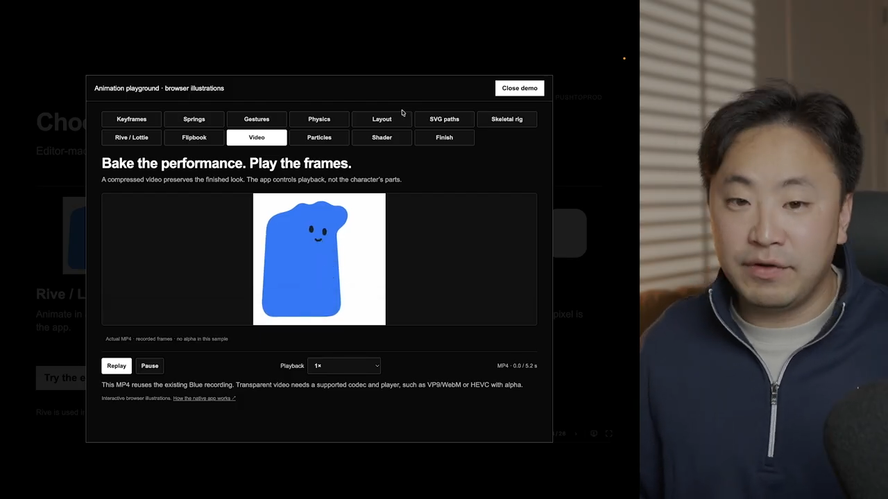
Rive와 Lottie, 그리고 치트 시트
마지막 도구는 Rive와 Lottie예요. 둘 다 애니메이션 전용 편집기라서, 키프레임을 눈으로 보며 다듬을 수 있어요. 캐릭터처럼 정교하고, 시각적으로 계속 확인해야 하는 작업에 특히 좋아요.
Rive 편집기
아래는 발표자의 퍼즐 앱 캐릭터를 연 Rive 편집기예요. 가운데 무대에 파란·주황·노란 캐릭터가 있어요. 왼쪽 아래 Animations 목록에는 Tutorial Lift, Sip, Notice, Delight, Doze, Surprise, Blink가 있어요. 아래 타임라인에는 키프레임 표시(마름모)가 세 개 찍혀 있어요.
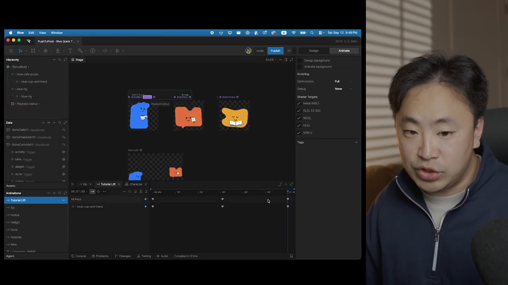
Lottie도 비슷한 도구라며 Lottielab 화면을 보여 줘요. 위에는 로고와 온보딩 애니메이션 같은 작업물이 늘어서 있고, 아래 타임라인에 Fade in, Animate path, Slide out 트랙이 있어요.
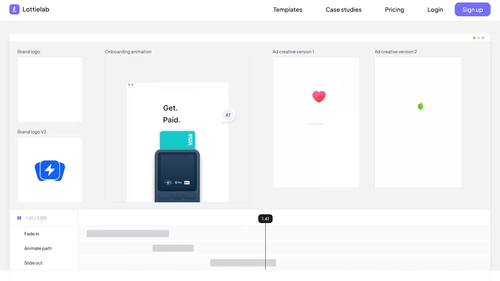
예제는 awesome-rive에서
Rive로 무엇을 할 수 있는지 보고 싶다면 GitHub의 rive-app/awesome-rive 저장소를 보라고 해요. Rive 런타임 예제, 글, 튜토리얼, 영상을 모아 둔 목록이에요. README 첫 이미지부터 상어 캐릭터 애니메이션이에요.
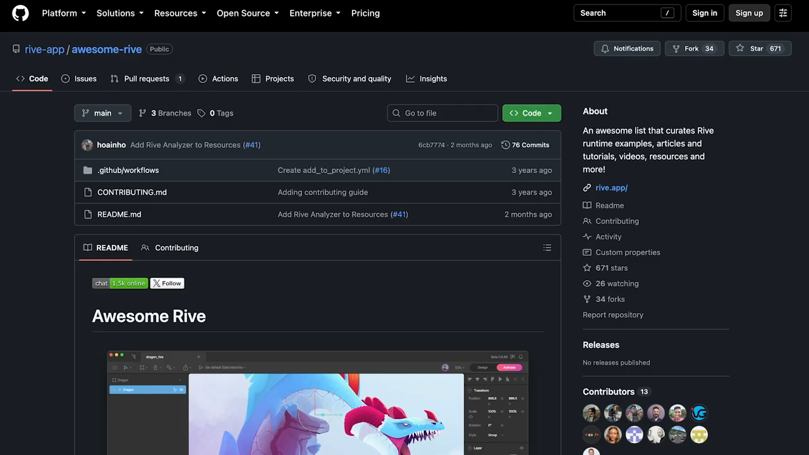
잠깐 비친 Rive 홈페이지에는 눈여겨볼 문장이 있어요. 'THE INTERACTIVE EXPERIENCE ENGINE' 아래에 편집기에서 직접 만들거나, CLI로 에이전트가 만들게 할 수 있다고 적혀 있어요. 오른쪽 아래에는 Rive CLI 설치 명령과 편집기 내려받기 버튼이 있어요.
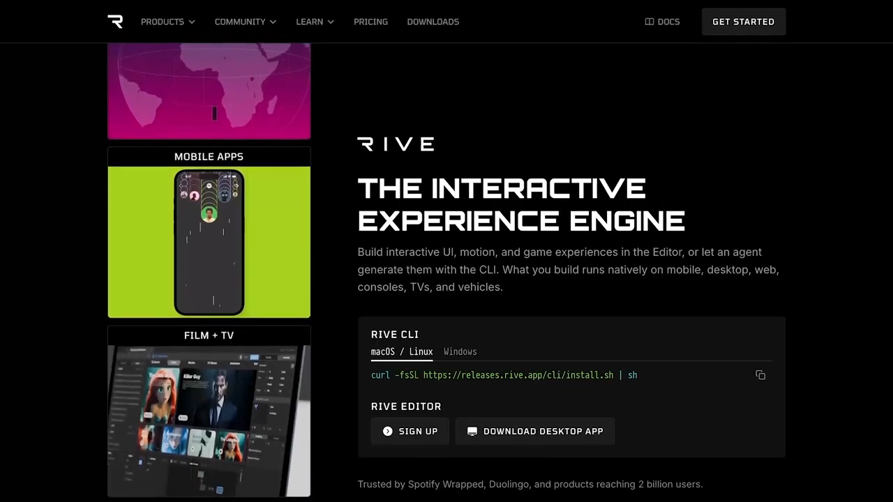
애니메이션 치트 시트
발표자는 지금까지의 기법을 한 장으로 정리한 치트 시트를 보여 줘요. 제목은 'The app animation cheat sheet'이고, 부제는 'Pick by the job. Combine for the feeling.'이에요. 할 일에 맞춰 고르고, 느낌을 위해 섞으라는 뜻이죠. 열두 칸 중 마지막 칸만 검은 바탕의 'Combine them.'이에요.
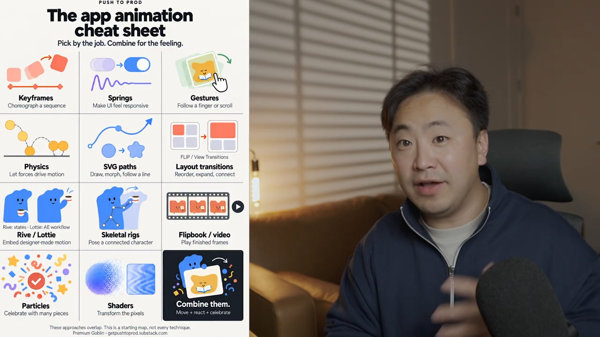
캡처에서는 글씨가 작아서 칸별 설명을 옮겨 적었어요.
| 기법 | 치트 시트의 한 줄 | 뜻 |
|---|---|---|
| Keyframes | Choreograph a sequence | 정해진 순서를 연출해요 |
| Springs | Make UI feel responsive | UI가 반응하는 느낌을 줘요 |
| Gestures | Follow a finger or scroll | 손가락이나 스크롤을 따라가요 |
| Physics | Let forces drive motion | 힘이 움직임을 이끌게 해요 |
| SVG paths | Draw, morph, follow a line | 선을 그리고, 모양을 바꾸고, 선을 따라가요 |
| Layout transitions | Reorder, expand, connect | 순서 바꾸기, 펼치기, 화면 잇기 (FLIP / View Transitions) |
| Rive / Lottie | Embed designer-made motion | 디자이너가 만든 움직임을 넣어요 (Rive: 상태, Lottie: AE(Adobe After Effects) 작업 흐름) |
| Skeletal rigs | Pose a connected character | 관절로 이어진 캐릭터에 자세를 줘요 |
| Flipbook / video | Play finished frames | 완성된 프레임을 재생해요 |
| Particles | Celebrate with many pieces | 조각 여럿으로 축하해요 |
| Shaders | Transform the pixels | 픽셀을 바꿔요 |
| Combine them | Move + react + celebrate | 움직이고, 반응하고, 축하하기를 섞어요 |
퍼즐 앱 한 장면에 섞인 기법들
이제 앞의 기법들이 실제 앱에서 어떻게 섞이는지 봐요. 퍼즐을 푸는 화면 하나에도 기법이 여러 개 겹쳐 있어요.
퍼즐을 푸는 화면
발표자는 퍼즐 조각을 끌어다 놓으며 하나씩 짚어요. 화면 왼쪽 슬라이드는 퍼즐을 다 맞췄을 때 쓰인 기법 네 가지예요. Spring UI, Tilt + damping, Particles, Shader + projection이 적혀 있고, 오른쪽이 실제 앱 녹화예요.
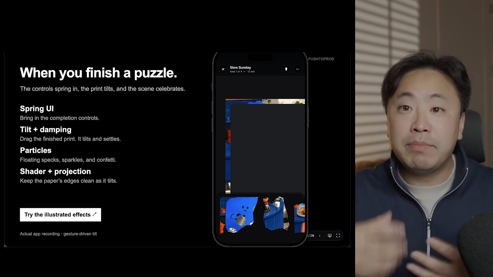
마지막 조각을 놓으면 그림이 카드 한 장으로 정리되고, 아래에 'Slow Sunday' 제목과 버튼이 올라와요. 슬라이드 설명대로 컨트롤이 스프링으로 들어오고, 완성된 그림이 기울며, 장면 전체가 축하해요.
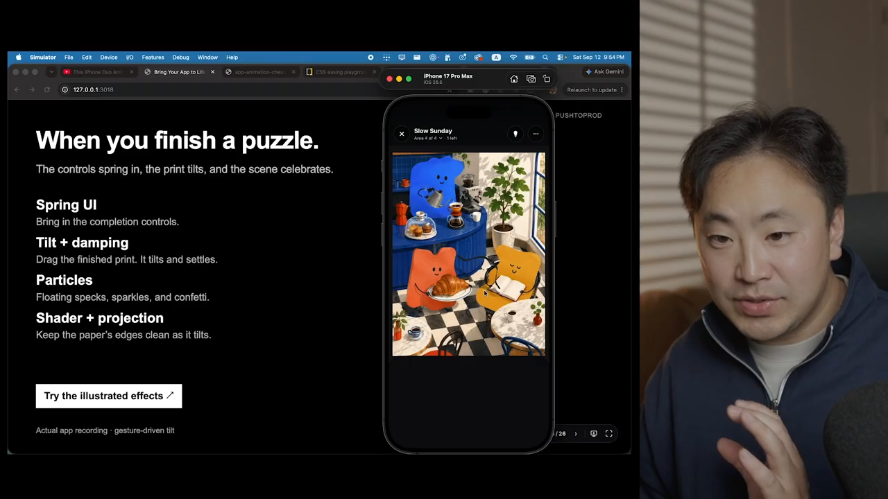
발표자가 짚은 순간과 기법을 정리하면 이래요.
| 순간 | 쓴 기법 |
|---|---|
| 조각을 끌어서 옮길 때 | 제스처, 잘못 놓으면 제자리로 돌아가기 |
| 조각을 놓는 순간 | 파티클 + 살짝 튕기며 자리 잡기 (스프링) |
| 한 구역을 다 채웠을 때 | 레이아웃 변화 |
| 둥근 모서리 | 셰이더 |
| 마지막 조각을 놓았을 때 | 튀어나왔다가 반짝이는 효과, 커서를 따라가는 파티클 |
| 완성 화면 | Spring UI, 기울기 + 감쇠, 파티클, 셰이더 + 투영 (슬라이드 표기) |
발표자는 Claude Code나 Codex에 "애니메이션 좀 넣어 줘"라고만 하면 이런 품질은 절대 안 나온다고 말해요. 그래서 이렇게 기법 하나하나를 짚어 보여 준다는 거예요.
첫 화면을 이루는 층
섹션 1에서 본 첫 화면으로 돌아가요. 캐릭터의 움직임은 크게 두 가지예요. 아래 슬라이드 왼쪽 'Sway'는 바닥을 축으로 좌우로 기울기, 오른쪽 'Travel'은 경로를 따라 자리를 옮기기예요. 위에는 SwiftUI가 캐릭터 뷰 전체를 움직인다고 적혀 있어요.
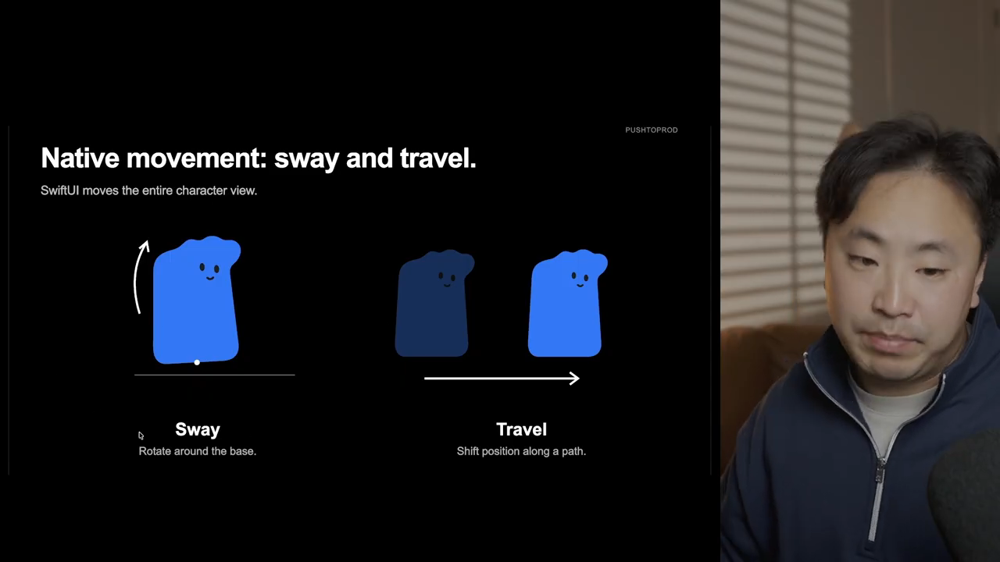
여기에 층을 겹쳐요. 주황 캐릭터는 뒤에, 다른 캐릭터들은 앞에 두는 식으로 그리는 순서를 정하면 3D 같은 패럴랙스가 생겨요. 배경 말풍선은 SVG 마스크예요. 뒤에 그림이 있고, 그 위를 덮는 마스크 모양이 계속 바뀌어요. 슬라이드에는 Shape A → Halfway → Shape B로 모양이 바뀌는 과정과 '10 shapes · 384 matching points'가 적혀 있어요.
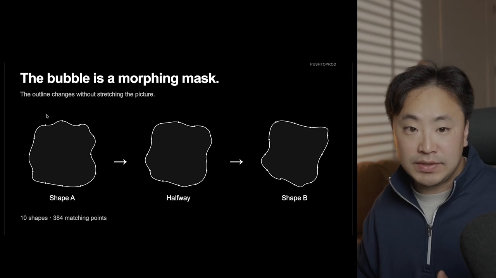
캐릭터 자체의 애니메이션은 Rive로 만들었어요. 슬라이드는 이를 세 부분으로 나눠요. Expression(눈, 얼굴, 반응), Body(변형과 몸짓), Props(손, 컵 같은 소품)예요. 표정이 바뀌고, 몸이 찌그러지고, 퍼즐 조각이나 컵을 들어요.
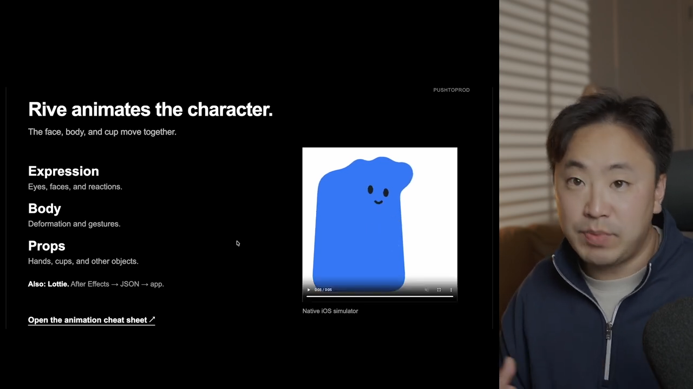
Codex 컴퓨터 사용으로 Rive 다루기
마지막으로 발표자가 이 캐릭터들을 어떻게 만들었는지 보여 줘요. 그는 Rive를 이번에 처음 써 봤어요. 조사하다 이 도구를 찾았고, 작업은 Codex의 컴퓨터 사용으로 했어요.
Codex가 Rive를 직접 조작해요
슬라이드는 구조를 한 줄로 보여 줘요. 왼쪽 Codex는 '내 지시', 오른쪽 Rive는 '눈에 보이는 편집기'이고, 둘 사이를 컴퓨터 사용이 이어요. 아래에는 Inspect → Edit → Verify, 즉 살펴보고, 고치고, 확인하는 순서가 적혀 있어요.
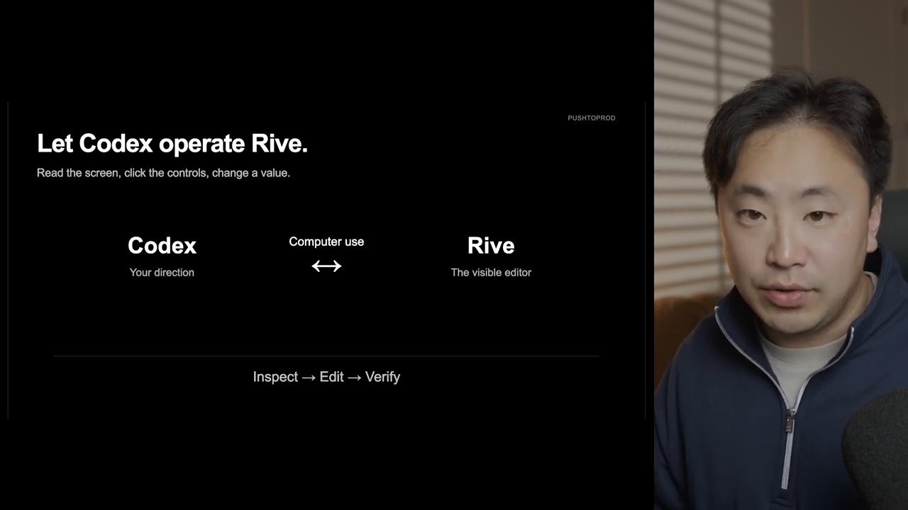
실제 요청은 평범한 문장이에요. 오른쪽 위 말풍선에 "컴퓨터 사용으로 Rive를 조작해서 보호(boho) 캐릭터에 새 애니메이션을 넣어 줄래? 모자를 쓰는 걸로 하자"라고 적혀 있어요. Codex는 Rive 캐릭터를 살펴보고 모자 애니메이션을 만들겠다고 답한 뒤, 설치된 Rive 앱을 선택하는 단계로 넘어가요. 프로젝트 이름은 'Sticker-Game'이에요.
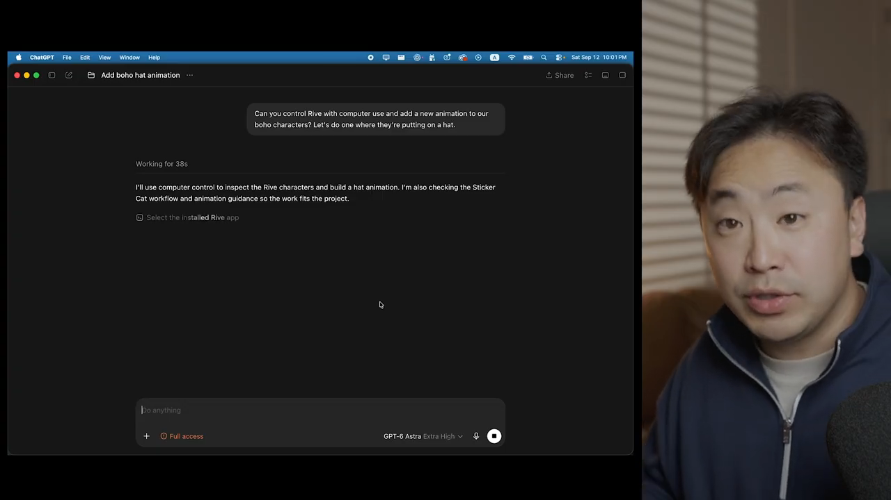
다만 처음부터 알아서 된 건 아니에요. 발표자는 캐릭터 디자인을 직접 많이 다듬었고, Codex에게 부품을 정리해서 좋은 계층 구조로 만드는 법을 먼저 가르쳤어요. 그다음에 애니메이션을 시켰어요.
커피 한 모금을 다섯 박자로
첫 작업은 커피 마시기였어요. 연습용으로는 키 세 개면 충분해요. 슬라이드에 0초 Start(휴식 자세 기록), 약 0.5초 Lift(컵과 손 들기), 1초 Return(처음 값으로 되돌리기)이 적혀 있어요. 왼쪽은 그 작업을 하는 Rive 화면이에요.
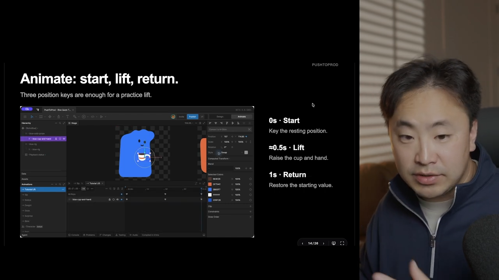
"커피 마시는 걸 해 줘" 정도로 말하자 Codex는 동작을 다섯 키프레임으로 쪼갰어요. 캡처의 다섯 칸이 Prepare(준비), Lift(들기), Contact(입에 닿기), Hold(머금기), Return(돌아오기)이에요. 맨 끝 칸은 맨 앞 칸과 같은 자세로 돌아와 있어요.
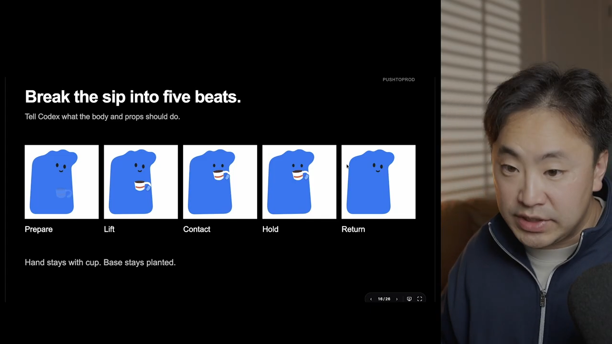
모든 동작은 휴식 상태로 돌아와요
발표자가 가장 중요하다고 강조한 설계예요. 상태 머신을 만들고, 모든 상태가 휴식 상태를 갖게 했어요. 커피를 마시든 모자를 쓰든, 끝나면 늘 같은 휴식 상태로 돌아와요. 그래야 시작점과 끝점이 분명하고, 어떤 동작이든 같은 자리에서 시작할 수 있어요. 게임 캐릭터 애니메이션에서 흔히 쓰는 방식이라고 해요. 말로 설명한 구조를 그림으로 옮기면 이래요.
stateDiagram-v2 direction LR [*] --> 휴식 휴식 --> 커피마시기: 동작 시작 커피마시기 --> 휴식: 끝나면 복귀 휴식 --> 모자쓰기: 동작 시작 모자쓰기 --> 휴식: 끝나면 복귀
테스트로는 안 잡히는 것
Rive 같은 도구를 쓰고 직접 눈으로 확인해야 하는 이유도 짚어요. AI는 이런 종류의 예외 상황을 잘 못 잡아요. 슬라이드 제목은 'Tests don't catch everything.'이에요. 왼쪽에는 확인할 세 가지가 있어요. Logic(동작이 끝났나), Motion(픽셀이 실제로 움직였나), Acting(몸짓이 말이 되나)이에요. 오른쪽 주황 캐릭터는 가장 넓게 찌그러질 때 오른쪽 가장자리가 잘려 있어요.
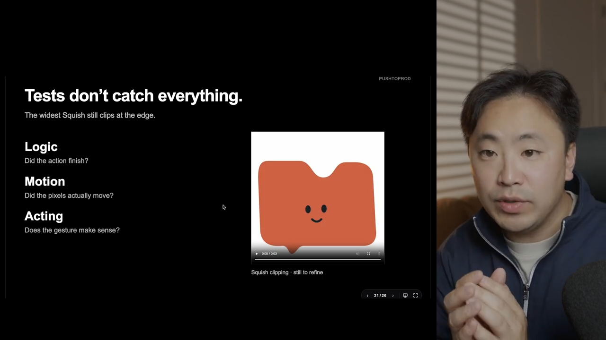
여기서 기법을 아는 게 힘을 써요. 버튼 누르는 느낌이 이상하면 "이징을 바꿔서 더 빨리 가속하거나 더 천천히 시작하자"라고 원인을 짚을 수 있어요. 모핑 가장자리가 울퉁불퉁하면 "SVG 경로 문제니 점을 더 넣어 매끄럽게 하자"라고 말할 수 있어요.
모자 쓰기 결과
다시 컴퓨터 사용 화면으로 돌아오면, 화면 속 화살표 커서가 Rive 안을 이리저리 움직이며 작업해요. 아래 두 캡처는 같은 작업의 중간과 끝이에요. 첫 캡처에서는 파란 캐릭터에만 밀짚모자가 얹혀 있고, 선택 상자가 모자를 감싸고 있어요.
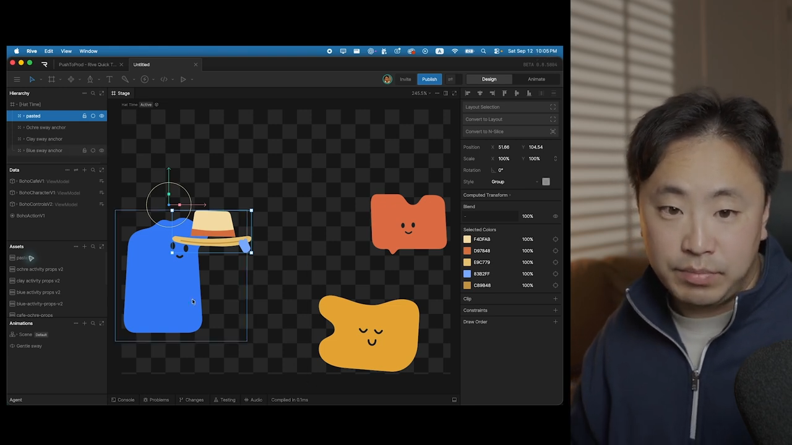
조금 뒤에는 파란 캐릭터와 주황 캐릭터 둘 다 모자를 쓰고 있어요. 왼쪽 계층 패널에는 'Clay hat gesture', 'Blue hat gesture 2' 같은 새 항목이 생겼어요.
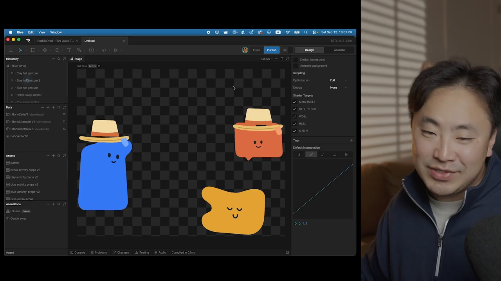
MCP나 CLI가 없는 도구라면
발표자는 쓰려는 도구에 MCP나 CLI가 없을 때 컴퓨터 사용이 특히 좋다고 해요. Codex로 Blender를 다루는 사람도 많대요. Blender에서 장면을 통째로 만들어 구워 내거나, 리깅해서 일부를 앱으로 가져올 수 있어요. 아래는 그 말을 할 때 비친 Blender 기본 화면이에요. 가운데 정육면체와 카메라, 조명이 있어요.
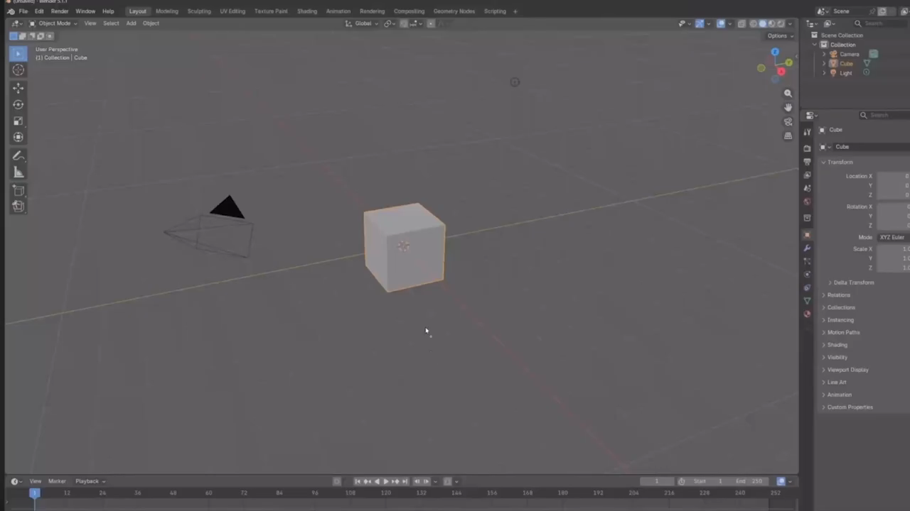
발표자의 결론은 이래요. 이런 도구를 직접 만져 보고 속에서 어떻게 돌아가는지 알아야 AI를 이끌 수 있어요. 소프트웨어 화면은 결국 평평한 2D 그림이에요. 그걸 살아 있게 느끼게 하는 데는 굴절 효과 같은 작은 마법이 필요하다는 거예요. 치트 시트와 기법별 장단점은 뉴스레터 'Push to Prod'에 글로 올린다고 했어요.